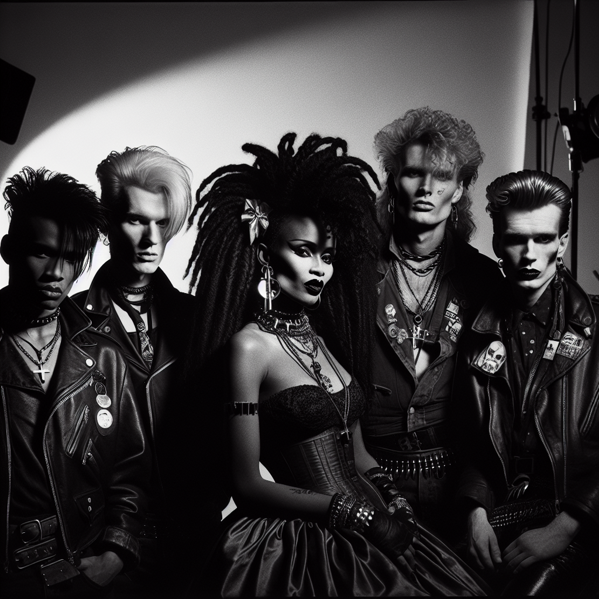

~ The Story ~
In the misty year of 1983, on the windswept shores of the Faroe Islands, a singular phenomenon known as Ethereal Trampleweed emerged. Like a tempest from the North Atlantic, their Ferocious Elegance style took the world by storm, blending Cosmic Yodeling with Industrial Shanties to create a sound both otherworldly and primal.
At the heart of this sonic maelstrom stands Magnus "The Whistler" Greysen, the enigmatic lead vocalist and cosmic yodeler. With a voice that can summon the auroras themselves, Magnus infuses every performance with a haunting allure.
Beside him strums Ingrid "Fierce Strings" Halverson, the visionary bassist. Her thunderous lines conjure images of rolling seas and anchor the band's ethereal melodies to the earth. Ingrid's quiet intensity and unyielding dedication are the backbone of the Trampleweed's rhythm.
Tickling the keys with both grace and raw power is Eirik "Tinker" Bjarnason on the synthesizer. Eirik's experimental spirit turns the ordinary into the extraordinary, weaving futuristic soundscapes with a mischievous twinkle in his eye.
On drums, the indomitable Freya "Stormfire" Josdottir commands with precision and passion. Her drumming is a force of nature, echoing the crashing waves and thunderous skies of their island home. Freya's fiery spirit fuels the band's untamed energy.
Finally, weaving tales through a tapestry of lyrics is the poetic genius, Rolf "Saga" Thomsen. His words capture the mystique of the Faroese landscape, painting stories that resonate with timeless depth and emotion.
Together, Ethereal Trampleweed is not just a band; they are an elemental force — a testament to the wild beauty of their homeland.
~ Band Photo ~

Mgmt: Ethereal Artists Group / Faroese
Magnus "The Whistler" Greysen, Ingrid "Fierce Strings" Halverson, Eirik "Tinker" Bjarnason, Freya "Stormfire" Josdottir, Rolf "Saga" Thomsen
~ The Members ~
| Magnus "The Whistler" Greysen | lead vocalist and cosmic yodeler |
| With a voice that can summon the auroras themselves, Magnus infuses every performance with a haunting allure. | |
| Ingrid "Fierce Strings" Halverson | bassist |
| Her thunderous lines conjure images of rolling seas and anchor the band's ethereal melodies to the earth. | |
| Eirik "Tinker" Bjarnason | synthesizer |
| Eirik's experimental spirit turns the ordinary into the extraordinary, weaving futuristic soundscapes with a mischievous twinkle in his eye. | |
| Freya "Stormfire" Josdottir | drums |
| Her drumming is a force of nature, echoing the crashing waves and thunderous skies of their island home. | |
| Rolf "Saga" Thomsen | lyricist |
| His words capture the mystique of the Faroese landscape, painting stories that resonate with timeless depth and emotion. | |
~ Discography ~
| Echos of the Nebula Wharf (1983) | |
| |
| Steel Waves & Cosmic Haze (1984) | |
| |
| Celestial Havens & Maritime Sparks (1985) | |
| |